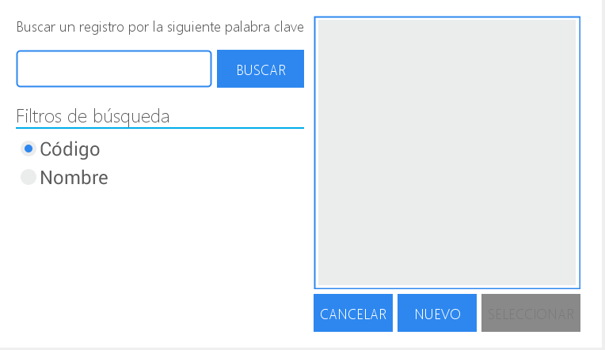
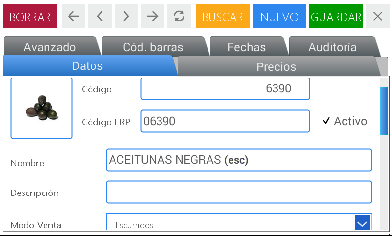
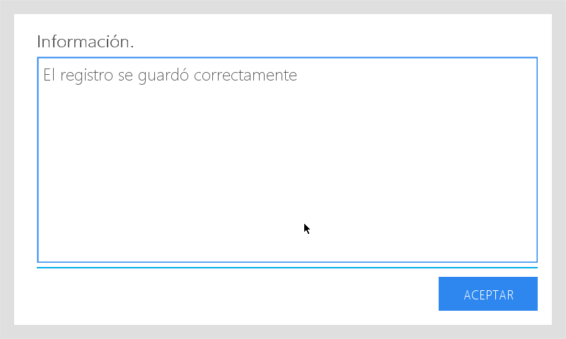
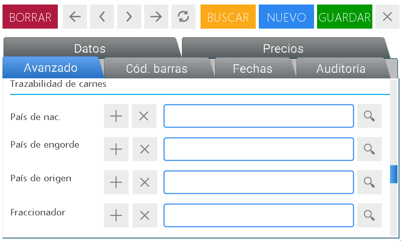
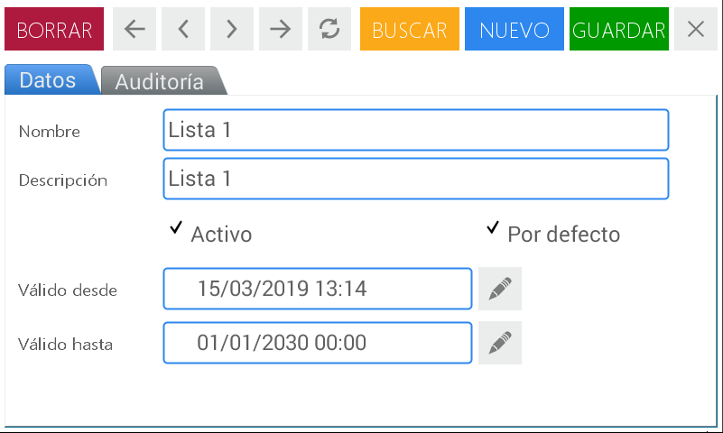
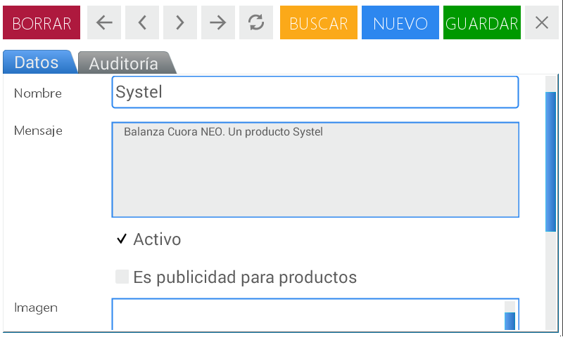
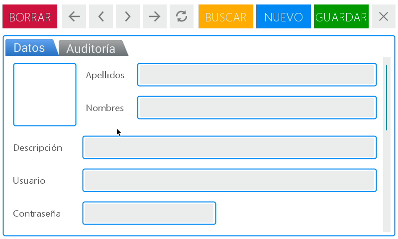
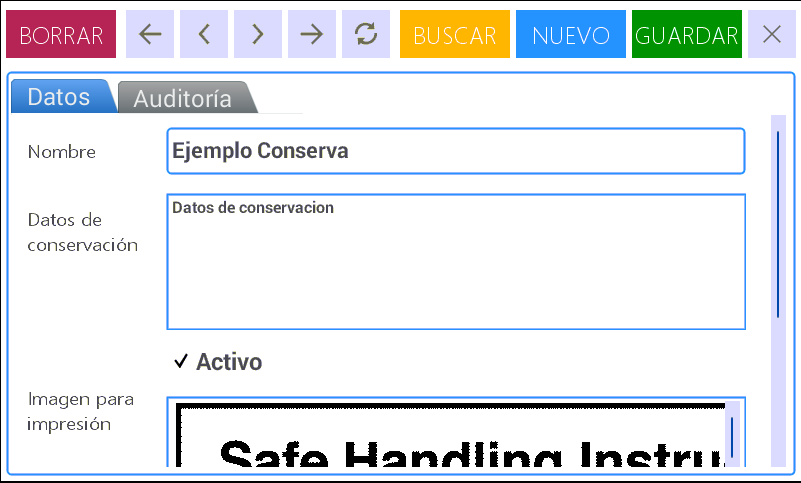
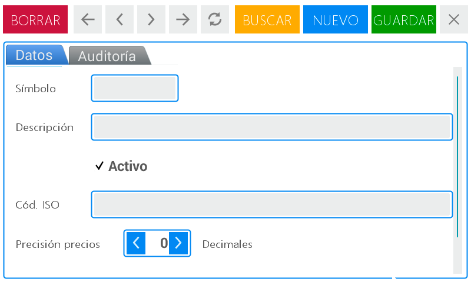
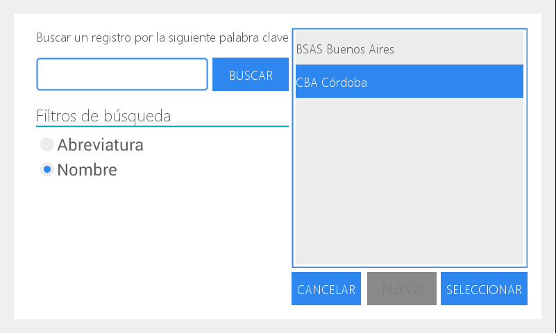

Altas, bajas y modificaciones (ABM)
Permite crear, modificar o eliminar artículos (PLUs) del equipo, configurar los parámetros vinculados a los mismos y asignar teclas de acceso directo a los productos más utilizados.

La siguiente imagen, representa el inicio de cada subsección, la cual será llenada con los datos correspondiente. Servirá para seleccionar un artículo pre-cargado, o para crear uno nuevo.

PLU’s
En esta opción puede configurar y/o modificar la información asociada a cada artículo (o PLU) y asignar las teclas de acceso directo para los productos de uso frecuente. Este módulo está conformado por 6 solapas:
- Datos
- Precios
- Avanzado
- Cód. barras
- Fechas
- Auditoría

Comenzaremos primero detallando la función que cumple cada solapa y la descripción de los campos que la conforman:
- Datos: información básica del PLU
- Código: existen tres formas de codificar un producto
- Código PLU: Lo genera el usuario en la balanza
- ERP: propio de cada empresa
- Nombre: es lo que denomina al producto
- Descripción: texto breve que permite identificar al producto por alguna particularidad
- Modo de venta: forma en la que se comercializa el producto: por unidad o por peso
- Departamento: sector al que pertenece el artículo
- Grupo: conjunto de artículos agrupados dentro de alguna condición
- Modificación de precios: permite cancelar o habilitar de manera temporaria la corrección del valor de un artículo
- Publicidad: mensaje que visualizará el operador de la balanza en la pantalla antes de generar la venta de un artículo. Puede cumplir la función de aviso puntual o recordatorio. Ej: llevando 2 kg de manzanas te llevás medio kilo a la mitad de precio
- Lote: admite agregar un número de lote a un PLU
- Tara: permite descontar el peso del envase, y así obtener el peso neto, en aquellos productos que necesitan de un contenedor o envoltorio para ser pesados o entregados
- Descuentos: Permite agregar un rango de peso o unidades que se corresponderan a un precio específico
- Hasta: Ingrese peso o cantidad de unidades maximas. El precio se aplicará hasta ese valor
- Precio: Ingrese el precio que regirá hasta el peso seleccionado en el campo “Hasta”
- Código: existen tres formas de codificar un producto
- Precios: permite definir el valor de un producto dentro de una lista de precios
- Avanzado: permite completar información relacionada con las características propias de un producto, su trazabilidad y distribuidor. Es posible establecer también los formatos de impresión
- Ingredientes: Permite predefinir el listado de elementos que componen un producto
- Datos de conservación: Permite precisar un listado de recomendaciones de uso/ preservación para los productos (Ej. temperatura, humedad, estiba, etc)
- Planilla Tabla nut.: permite visualizar y seleccionar las tablas nutricionales ya creadas
- Datos tabla nut.: permite crear la tabla nutricional del producto
- Datos adicionales de propósito gral. (bis): información adicional del producto
- Imagen para impresión: permite asociar una imagen lineal al producto que podrá ser visualizada en la impresión del ticket
- Formatos de impresión: permite seleccionar/optar por dos clases de formatos de impresión. Esta opción se utiliza sólo cuando se requiera definir un formato diferente al preestablecido
- a. Venta directa: formato de impresión que se emite al vender un producto al público
- b. Pre-empaque: este modo permite etiquetar:
- varios productos con un mismo artículo de manera sucesiva o
- productos que son pesados fuera de la vista del consumidor (normativa ley información nutricional)
- Trazabilidad de carnes: permite registrar los elementos referidos a la historia del animal, desde el inicio hasta el final de la cadena de comercialización
- Datos de proveedores: permite ingresar información relevante de los proveedores
- Código de barras: permite seleccionar la impresión de uno o más códigos de barra de acuerdo a las necesidades del negocio
- Fechas: permite establecer fecha y hora de vencimiento de un producto de manera manual (al momento de generar una venta) o utilizando el formato que ofrece el equipo. Esta información se visualizará en la impresión de la etiqueta
- Auditoría: se visualiza información relacionada al registro de datos guardados
Como generar un PLU.
A continuación, describiremos los pasos a seguir para generar el PLU de un producto siguiendo el orden de las solapas detalladas con anterioridad.
Ingrese al menú presionando la tecla
Seleccione usuario y digite la contraseña correspondiente.
Presione Aceptar
Elija la opción Altas y bajas ubicada en el cuadrante superior derecho de la pantalla
En la pantalla se visualiza el menú completo de este módulo. Presione PLU’s
Para comenzar con la creación del PLU presione Nuevo. Esta acción se encuentra en la barra de navegación ubicada en el margen superior

Después de ejecutar esta acción podrá empezar a completar los ítems detallados en la primera solapa Datos. Las demás aparecen grisadas y se activan a medida que completa y guarda la información requerida en cada caso.
Una vez posicionado en la pantalla de Datos se ubica inicialmente el campo denominado Código. Aquí puede colocar el número de PLU del producto a crear utilizando las flechas ubicadas en los extremos del recuadro o ingresando el número a través del teclado numérico.
En el segundo campo Código ERP es posible colocar la identificación propia de su empresa. Esta acción la puede realizar utilizando el teclado numérico del equipo o presionando la tecla para visualizar el teclado alfanumérico que le permite colocar letras y números.
A la izquierda de los campos antes descriptos se visualiza un cuadro blanco.
Presione sobre el mismo para activar el menú de búsqueda

Dentro del mismo seleccione la imagen que corresponde al nuevo PLU, desplazándose con el scroll en el recuadro derecho o activando la búsqueda por palabra clave.
Luego de marcar la imagen a utilizar presione Seleccionar
En el espacio Nombre puede colocar el término que identifica al producto. Presione el recuadro para habilitar el espacio de escritura, luego la tecla para visualizar el teclado alfanumérico en la pantalla, escriba el nombre del producto y presione aceptar
Realice las mismas acciones descriptas en el paso anterior para completar el campo de Descripción
En el campo Modo Venta presione la flecha ubicada en el extremo derecho del recuadro. De esta manera se habilita el menú desplegable que muestra todas las posibilidades con las que cuenta el equipo:
- Pesable
- Unitario
- Congelado
- Escurridos
Seleccione la que corresponde presionando sobre la misma.

Los campos siguientes denominados Departamentos y Grupos funcionan de la misma manera. Presionando:
- la lupa se habilita el menú de búsqueda
- el símbolo + accede a los departamentos o grupos ya existentes para realizar alguna modificación
- el ícono X le permite eliminar de la pantalla el departamento o grupo seleccionado para volver a realizar la acción.
En el campo Modificación de precios presione la flecha ubicada en el extremo derecho del recuadro. De esta manera se habilita el menú desplegable que muestra dos opciones:
- No permitir cambios: evita la modificación manual del precio del producto
- Permitir al operario modif. temporaria: el usuario del equipo puede realizar un cambio manual y provisorio en el valor del artículo
En el campo Publicidad puede ejecutar las siguientes acciones según su necesidad:
- presionando la lupa aparece el menú de búsqueda
En el cuadro derecho visualizará el detalle de las publicidades creadas con anterioridad o podrá ampliar la búsqueda por palabra clave - El símbolo + le permite acceder a los mensajes ya existentes para realizar alguna modificación
- El símbolo X le permite eliminar de la pantalla el anuncio seleccionado para volver a realizar la acción
Para colocar un número de lote al PLU presione el campo correspondiente para habilitarlo. Puede utilizar el teclado numérico del equipo o activar el alfanumérico presionando la tecla

De ser necesario, en el campo Tara puede colocar el peso del envase que contiene el producto. Este paso lo puede realizar:
- utilizando las flechas ubicadas en los extremos del recuadro
- ingresando el número a través del teclado numérico
Si el PLU a crear corresponde a un producto Congelado se visualiza además el campo Porcentaje de agua. Realice los pasos descriptos en el ítem anterior para completarlo.
Presione Guardar

Continuamos con las acciones a ejecutar en la segunda solapa Precios
Presione el cuadro donde se visualiza el precio para colocar el valor del producto
Utilice la tecla para borrar el precio
Ingrese el precio a través del teclado numérico de la balanza
Luego presione Enter para confirmar la modificación
Explicaremos ahora la manera de ingresar información en cada uno de los ítems que conforman la tercer solapa Avanzado.

Los campos denominados Ingredientes y Datos de conservación funcionan de la misma manera. Presionando:
- la lupa aparece el menú de búsqueda. En el cuadro derecho visualizará el detalle de los ingredientes o sugerencias de conservación ya cargados. Elija los que corresponden al PLU a crear y luego presione seleccionar
- El símbolo + le permite acceder al listado de ingredientes o datos de conservación ya existentes para realizar alguna modificación o ingresar nuevos componentes
En el campo Planilla Tabla nut. puede asociar al PLU una tabla nutricional ya creada. Para ello presione la lupa y realice los pasos descriptos con anterioridad para realizar una búsqueda.

El espacio Datos Tabla nut. muestra un editor que le permite colocar los valores nutricionales correspondientes.

Presione los cuadrantes con fondo blanco para habilitarlos y complete la información requerida utilizando el teclado numérico o habilitando el alfanumérico a través de la tecla

Los campos de Datos adicionales de propósito general y Datos adicionales de propósito general (bis) se activan de la misma manera: presione el recuadro para habilitar el espacio de escritura, luego la tecla para visualizar el teclado alfanumérico en la pantalla, escriba la información adicional necesaria y presione aceptar
Para utilizar una Imagen para impresión presione sobre el campo en blanco. De esta forma se abrirá un menú de búsqueda. En el cuadro derecho visualizará las imágenes ya cargadas. Elija la que corresponde al PLU a crear y luego presione seleccionar. Recuerde que puede ampliar la exploración utilizando la opción de búsqueda por palabra clave.
Dentro de la línea de Formatos de Impresión, se encuentran dos posibilidades: Venta directa y Pre-empaque. En ambas las acciones disponibles se ejecutan de la misma manera:

- presionando la lupa se visualiza el menú de búsqueda. En el cuadro derecho visualiza los modos de venta ya generados. Elija el que corresponde al PLU a crear y luego presione seleccionar. Recuerde que puede ampliar la exploración utilizando la opción de búsqueda por palabra clave
- El símbolo X le permite eliminar de la pantalla el formato de impresión seleccionado
Los campos Trazabilidad de Carnes y Datos de proveedores tiene varias líneas de información.


Las acciones disponibles para seleccionar o completar datos en cada una de ellas son las mismas:
- La lupa habilita el menú de búsqueda con los registros ya creados y ampliada por palabra clave
- El símbolo + permite acceder a información ya existente para realizar alguna modificación. En el caso de Trazabilidad de Carnes se visualizan los datos del módulo Países; y en el de Datos de Proveedores se habilita la pantalla correspondiente a Terceros
- El símbolo X permite eliminar de la pantalla la información seleccionada
Al finalizar presione Guardar
Continuamos con la cuarta solapa Cód. barras.

Para activar o desactivar las funciones disponibles en este módulo del menú debe presionar sobre los cuadros grisados. Al hacerlo desaparece el cuadro y se visualiza un tilde.
En la línea Reemplazar PLU por el número puede utilizar las flechas ubicadas en los extremos del recuadro o ingresar el número a través del teclado numérico.
En los campos UPC / Código de barras fijo y Código de barras fijo presione el campo de escritura para habilitarlos:
- ingrese números a través del teclado numérico
- presione para activar el teclado alfanumérico
Al finalizar todas las modificaciones requeridas presione Guardar
Seguimos con la solapa ubicada en el quinto lugar denominada Fechas.
Para comprender mejor su funcionamiento describiremos, a modo de ejemplo, los pasos a seguir para establecer la fecha de vencimiento de un producto: carne molida que se comercializa en góndola.

En el primer ítems Base de cálculo presione la flecha ubicada en el extremo derecho del recuadro para visualizar el menú desplegable
Seleccione la opción Fecha de venta + margen
En el cuadro Margen (días) coloque la cantidad de días límite para su consumo: 3 (tres) días. Para ello presione tres veces la flecha hasta visualizar el número tres.
Otra manera de hacerlo es presionar el campo para activarlo, ubicar el cursor detrás del número o deslizar el dedo para marcarlo, presionar para borrar y luego colocar el número tres desde el teclado numérico.
Continúe completando los datos que se encuentran en Configuración de fecha de venta.
Presione la flecha ubicada en el extremo derecho del recuadro Fecha y hora. De esta manera se habilita el menú desplegable que muestra todas las opciones disponibles:
- Fecha y hora
- Sólo fecha
- Sólo hora
Seleccione la segunda opción presionando sobre la misma.
En el campo siguiente Base de cálculo realice las acciones descriptas en el ítems anterior y seleccione Fecha en la que se produce la venta + margen
En el cuadro Margen (días) coloque la cantidad de días: 3 (tres) siguiendo los pasos detallados anteriormente
Luego presione Guardar
Y por último la solapa Auditoría que muestra información relacionada al registro de datos guardados.

Listas de Precios
Permite generar nuevas listas de precios y asociar artículos a las mismas con la posibilidad de establecer una fecha de vigencia. El equipo cuenta con dos listas de precios preestablecidas de fábrica.

Ingrese al menú presionando la tecla
Seleccione usuario y digite la contraseña correspondiente.
Presione Aceptar
Elija la opción Altas y bajas ubicada en el cuadrante superior derecho de la pantalla
En la pantalla se visualiza el menú completo de este módulo. Presione Listas de Precios
Para comenzar con la creación de una nueva lista de precios presione Nuevo.
Después de ejecutar esta acción podrá empezar a completar los ítems detallados en el primer campo denominado Datos. Los demás aparecen grisados y se activan a medida que completa la información requerida en cada caso.
Una vez ubicado en la pantalla de Datos encontrará el primer campo denominado Nombre. Aquí puede colocar el término que identificará a la nueva lista de precios. Por ej: Ofertas de la semana. Para ello presione el campo de texto para activarlo y luego la tecla para visualizar en pantalla el teclado alfanumérico.
En el campo Descripción puede colocar un texto breve que explique el alcance de la lista de precios creada. Las acciones a realizar son las mismas que las detalladas en el paso anterior.
Al crear la lista de precios siempre aparece tildada la palabra Activo. Esto quiere decir que el operador del equipo podrá seleccionar esta lista al momento de concretar la venta de los productos asociados a la misma. Si desea que la nueva lista se visualice en primera instancia al momento de realizar una venta, presione el cuadro Por defecto.
También puede utilizar los campos Válido desde y Válido hasta para establecer una fecha de vigencia a la lista de precios creada:
- utilizando las flechas ubicadas en los extremos del recuadro
- ingresando el número a través del teclado numérico. Para ello deberá primero presionar el campo para activarlo
Presione Guardar para confirmar la operación.
Se visualiza un mensaje de confirmación. Presione Aceptar
Imágenes
En este campo es posible cargar todas las imágenes que se visualizarán en pantalla. Esta operación se puede realizar a través de un dispositivo pendrive.

Ingrese al menú presionando la tecla
Seleccione usuario y digite la contraseña correspondiente.
Presione Aceptar
Elija la opción Altas y bajas ubicada en el cuadrante superior derecho de la pantalla.
En la pantalla se visualiza el menú completo de este módulo. Presione Imágenes
Para comenzar con la carga de imágenes presione Nuevo
Después de ejecutar esta acción podrá empezar a completar los ítems detallados en la primera solapa Datos.
Primero presione el campo Nombre para activar el espacio de escritura, luego la tecla para visualizar el teclado alfanumérico y digite el término que identifica la imagen a subir.
La palabra Activo aparece tildada por defecto. Seleccione además la opción que se vincula con la imagen a cargar:
- Icono para acceso
- Es logo de RSI
- Imagen de producto
- Imagen de proveedor, usuario, etc
Presione el cuadro en blanco siguiente para cargar o modificar la imagen.
Luego de esta acción se visualiza la siguiente pantalla

Presione la flecha del cuadro Buscar en para seleccionar el archivo de origen.
En el campo Nombre de archivo coloque el término que identifica la imagen. Para hacerlo presione la tecla para habilitar el teclado alfanumérico.
Presione Abrir
Publicidades
Permite visualizar en el sector inferior del visor de la balanza, un mensaje publicitario referente a su negocio o productos, programado de acuerdo a su necesidad.

Ingrese al menú presionando la tecla
Seleccione usuario y digite la contraseña correspondiente.
Presione Aceptar
Elija la opción Altas y bajas ubicada en el cuadrante superior derecho de la pantalla
En la pantalla se visualiza el menú completo de este módulo. Presione Publicidades
Para crear un anuncio publicitario presione Nuevo
Después de ejecutar esta acción podrá empezar a completar los ítems detallados en la primera solapa Datos.
Primero presione el campo Nombre para activar el espacio de escritura, luego la tecla para visualizar el teclado alfanumérico y digite el término que identifica la publicidad.
Escriba la pauta publicitaria activando el campo de escritura de MENSAJE y siga los mismos pasos ya descriptos.
Luego seleccione Activo si desea que el mensaje se visualice en el visor del cliente (no se relaciona con un producto) o elija Es publicidad para productos si el anuncio se vincula a un artículo en particular.
Presione Guardar para confirmar la operación.
En la solapa Auditoría se visualiza información relacionada al registro de datos guardados.
Usuarios
En este punto se gestiona el ABM de usuarios con la posibilidad de definir distintos permisos para cada uno (venta, consulta, administración)

Ingrese al menú presionando la tecla
Seleccione usuario y digite la contraseña correspondiente.
Presione Aceptar
Elija la opción Altas y bajas ubicada en el cuadrante superior derecho de la pantalla
En la pantalla se visualiza el menú completo de este módulo. Presione Usuarios
Para crear un usuario presione Nuevo

Después de ejecutar esta acción podrá comenzar a completar los ítems detallados en la primera solapa Datos
Complete la información del usuario a crear: Apellidos, Nombres, Descripción, Usuario, Contraseña y Confirmar.
Todos los campos se utilizan de la misma manera:
- presione el espacio de escritura para activarlo
- luego la tecla para visualizar el teclado alfanumérico
- digite las letras necesarias
- presione Entrar para confirmar
La palabra Activo aparece tildada por defecto.
Si desea restringir los permisos de un usuario para que no pueda realizar ninguna operación con la balanza, seleccione Bloqueado.
En el campo Rol presione la lupa para habilitar el menú desplegable y seleccione la función que desarrolla el usuario creado:
- Administrador - Consulta - Vendedor
Continúe completando la información correspondiente a Correo electrónico y Teléfonos siguiendo los pasos descriptos anteriormente.
Presione Guardar para confirmar la operación.
En la última solapa Auditoría se visualiza información relacionada al registro de datos guardados.
Departamentos
Permite crear, modificar y/o borrar Departamentos (o sectores) a los que luego se le asociará los artículos (PLUs). Al generarlos podrá reunir los PLUs en grupos, facilitando listados, reportes de ventas, mantenimiento y actualización de datos.

Ingrese al menú presionando la tecla
Seleccione usuario y digite la contraseña correspondiente.
Presione Aceptar.
Elija la opción Altas y bajas ubicada en el cuadrante superior derecho de la pantalla.
En la pantalla se visualiza el menú completo de este módulo. Presione Departamentos.
Para comenzar con la creación de un departamento presione Nuevo.

Después de ejecutar esta acción podrá empezar a completar los ítems detallados en la primera solapa denominada Datos.
Una vez ubicado en la pantalla de Datos encontrará el primer campo Código. Aquí puede colocar el número asociado al departamento a crear.
La palabra Activo aparece tildada por defecto. Cuando desee deshabilitar un departamento destilde esta acción.
Active el campo Nombre para escribir el nombre del departamento.
También puede seleccionar alguno de los departamentos precargados de fábrica. Para ello presione Buscar (ubicado en la barra superior) y seleccione el que precise:
- Fiambres y Lácteos
- Carnicería
- Verdulería
- Panadería
- Pescados y Mariscos
- Regalería y Bazar
- Sector Genérico
Presione Guardar.
En la solapa Auditoría se visualiza información relacionada al registro de datos guardados
Grupos
Permite crear, modificar y/o borrar Grupos a los que luego se le vincularán los artículos (PLUs)
Ingrese al menú presionando la tecla
Seleccione usuario y digite la contraseña correspondiente.
Presione Aceptar
Elija la opción Altas y bajas ubicada en el cuadrante superior derecho de la pantalla
En la pantalla se visualiza el menú completo de este módulo. Presione Grupos
Para comenzar con la creación de un Grupo presione Nuevo.
Una vez ubicado en la pantalla de Datos encontrará el primer campo denominado Código. Aquí puede colocar el número asociado al grupo a crear activando el espacio de escritura.
La palabra Activo aparece tildada por defecto. Cuando desee deshabilitar un grupo destilde esta acción.
Active el campo Nombre para escribir el nombre del grupo.
Para ubicar grupos ya creados presione Buscar (ubicado en la barra superior) y seleccione el que necesite.
Presione Guardar.
En la solapa Auditoría se visualiza información relacionada al registro de datos guardados
Ingredientes
Permite predefinir el listado de elementos que componen un producto. Los mismo pueden ser asignados, con posterioridad, en la configuración de un PLU (y se visualizarán en la impresión de etiquetas)

Ingrese al menú presionando la tecla
Seleccione usuario y digite la contraseña correspondiente.
Presione Aceptar
Elija la opción Altas y bajas ubicada en el cuadrante superior derecho de la pantalla
En la pantalla se visualiza el menú completo de este módulo. Presione Ingredientes
Para comenzar con la creación de Ingredientes presione Nuevo.

Una vez ubicado en la pantalla de Datos active el campo Nombre y coloque el término que identificará al ingrediente o grupo de elementos que componen el producto.
Realice los mismos pasos para completar el campo Ingredientes. Aquí podrá colocar el detalle completo de los componentes.
La palabra Activo aparece tildada por defecto. Cuando desee deshabilitar un ingrediente destilde esta acción.
Presione Guardar.
En la solapa Auditoría se visualiza información relacionada al registro de datos guardados.
Conservaciones
Permite precisar un listado de recomendaciones de uso/ preservación para los productos (Ej. temperatura, humedad, estiba, etc). Estas sugerencias podrán ser convocadas luego en la creación/configuración de un PLU (y se observarán en la impresión de etiquetas)

Ingrese al menú presionando la tecla
Seleccione usuario y digite la contraseña correspondiente.
Presione Aceptar
Elija la opción Altas y bajas ubicada en el cuadrante superior derecho de la pantalla
En la pantalla se visualiza el menú completo de este módulo. Presione Conservación
Para comenzar con la creación de nuevos datos de Conservación presione Nuevo.

Una vez ubicado en la pantalla de Datos active el campo Nombre y coloque el término que identifica el tipo de conservación a crear.
Realice los mismos pasos para completar el campo Datos de conservación. Aquí podrá colocar el detalle completo de las indicaciones relacionadas con la preservación adecuada del producto.
La palabra Activo aparece tildada por defecto. Seleccione esta opción cuando precise deshabilitarlo.
Presione Guardar
En la solapa Auditoría se visualiza información relacionada al registro de datos guardados.
Terceros
Permite crear una agenda que contiene información (primaria y secundaria) de las personas que se vinculan de manera directa o indirecta con su negocio.
Ingrese al menú presionando la tecla
Seleccione el módulo Altas y bajas
Presione el acceso Terceros
Para comenzar con la creación de un nuevo registro presione Nuevo.

Una vez ubicado en la pantalla de Datos active el campo Nombre y complete los datos correspondientes.
Realice los mismos pasos para completar el apartado siguiente Descripción
La palabra Activo aparece tildada por defecto. Cuando desee deshabilitar algún tercero destilde esta opción

Dentro de las opciones disponibles en el campo Tipo seleccione la que se vincule a la profesión o rol de la persona ingresada.
Por último, active Ident. fiscal para ingresar los datos correspondientes a la misma si así lo requiere.
Luego continúe con el ingreso de información seleccionando la solapa siguiente Teléfonos y Direcciones.
En recuadro Nombre seleccione la que corresponde al contacto ingresado.
Si requiere alguna modificación de la información ya existente presione Cambiar
Modifique los datos necesarios activando cada campo.
Presione Guardar.
En la solapa Auditoría se visualiza información relacionada al registro de datos guardados
Monedas
Permite definir el símbolo monetario (ej. $, U$D, etc.), como así también la coma decimal para el precio. Esta configuración es la que se mostrará en los comprobantes, impresiones de venta o reportes.

Ingrese al menú presionando la tecla
Seleccione el módulo Altas y bajas
Presione el acceso Monedas
Para comenzar con la creación de un nuevo registro presione Nuevo.

Una vez ubicado en la pantalla de Datos active el campo Símbolo y coloque el signo que identifica el tipo de moneda a crear.
Realice los mismos pasos para completar el apartado siguiente Descripción
La palabra Activo aparece tildada por defecto. Cuando desee deshabilitar algún valor monetario, destilde esta opción.
Complete el Cód. ISO activando dicho campo.
Y en la línea Precisión precios coloque los decimales correspondientes.
Presione Guardar.
Para localizar los registros ya creados presione Buscar (ubicado en la barra superior) Puede agilizar la búsqueda por código ISO o Descripción.

En la solapa Auditoría se visualiza información relacionada al registro de datos guardados
Países
Permite completar la información asociada al país de origen del producto.
Ingrese al menú presionando la tecla
Seleccione el módulo Altas y bajas
Presione el acceso Países
Para comenzar con la creación de un nuevo registro presione Nuevo.

Una vez ubicado en la pantalla de Datos active el campo Nombre y coloque el nombre del país a crear.
Realice los mismos pasos para completar el apartado siguiente Descripción.
La palabra Activo aparece tildada por defecto. Cuando desee deshabilitar algún país seleccione esta opción.
Complete el Cód. ISO, que identifica al país a ingresar, activando dicho campo.
Y en la línea Moneda puede seleccionar el menú de búsqueda para localizar los valores monetarios ya creados o presionar el signo + para modificar alguno de los existentes.
Presione Guardar.
Para localizar los registros ya creados elija la opción Buscar (ubicado en la barra superior) Puede ampliar la búsqueda por Código ISO o Descripción.
En la solapa Auditoría se visualiza información relacionada al registro de datos guardados
Provincias
Permite establecer la información que corresponde a la provincia de donde proviene el producto.

Ingrese al menú presionando la tecla
Seleccione el módulo Altas y bajas
Presione el acceso Provincias
Para comenzar con la creación de un nuevo registro presione Nuevo.

Una vez ubicado en la pantalla de Datos active el campo Nombre y coloque el nombre de la provincia a ingresar..
Realice los mismos pasos para completar el apartado siguiente Descripción.
La palabra Activo aparece tildada por defecto. Cuando desee deshabilitar alguna Región seleccione esta opción.
Presione el campo Abreviatura para activar el espacio de escritura y colocar las siglas que identifican la provincia a crear.
Y en la línea País seleccione el menú de búsqueda para localizar los países ya creados o presione el signo + para modificar alguno de los existentes.
Presione Guardar
Para localizar los registros ya creados elija la opción Buscar (ubicado en la barra superior) Puede acotar la búsqueda por Nombre.

En la solapa Auditoría se visualiza información relacionada al registro de datos guardado
Ciudades
Permite ingresar la ciudad de procedencia del producto.

Ingrese al menú presionado la tecla
Seleccione el módulo Altas y bajas
Presione el acceso Ciudades
Para comenzar con la creación de un nuevo registro presione Nuevo.

Una vez ubicado en la pantalla de Datos active el campo Nombre y coloque el nombre de la ciudad a ingresar.
Realice los mismos pasos para completar el apartado siguiente Cód. área.
La palabra Activo aparece tildada por defecto. Cuando desee deshabilitar alguna localidad seleccione esta opción.
Presione el campo Cód. Postal para activar el espacio de escritura y colocar el esquema que identifica la ciudad a crear.
Las dos líneas siguientes Provincia y País se completan de la misma forma:
- seleccione el menú de búsqueda para localizar las provincias y países ya creados
- presione el signo + para modificar alguno de los existentes
Presione Guardar
Para localizar los registros ya creados elija la opción Buscar (ubicado en la barra superior) Puede acotar la búsqueda por Abreviatura o Nombre
En la solapa Auditoría se visualiza información relacionada al registro de datos guardados.